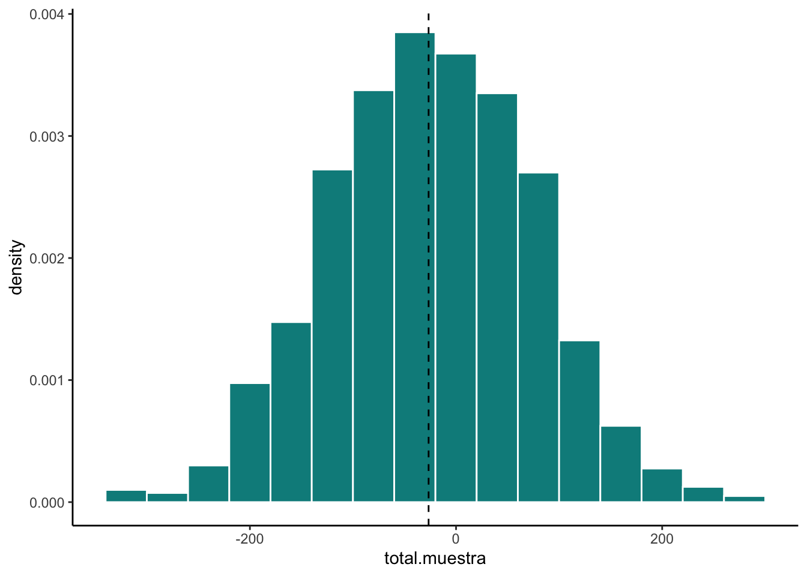
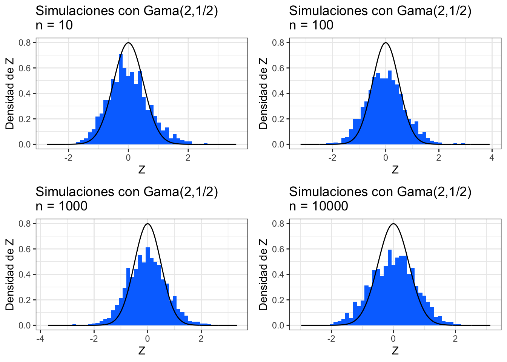
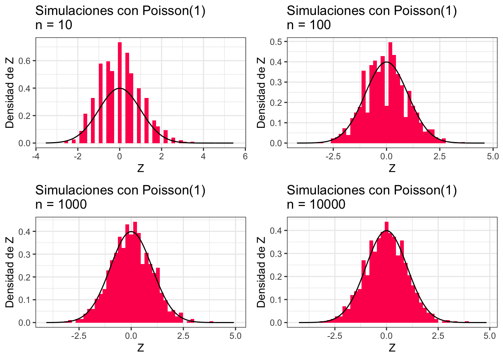
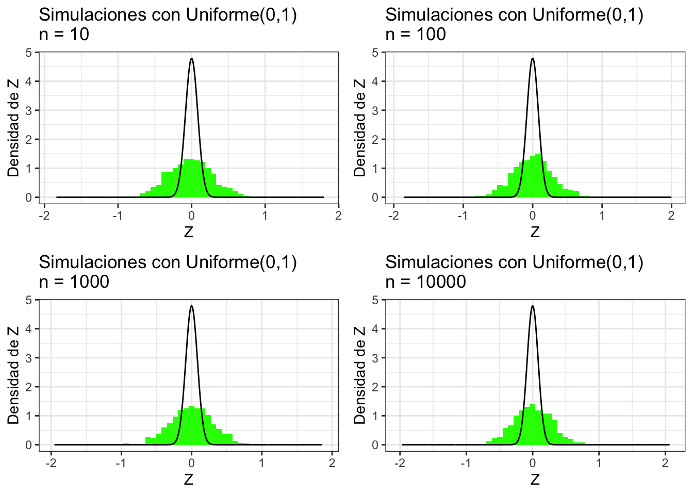

Capítulo 5 Muestreo Aleatorio Simple sin Reemplazo (MAS/sR)
Vamos a considerar una de las formas más sencillas de muestreo: el aleatorio simple sin reemplazo . Para ello seleccionamos de \(U = (x_1, x_2, \dots, x_N)^T\) a \(n\in\mathbb{N}\) (fijo) observaciones asignándole la probabilidad de ser seleccionada a cada una de \(\frac{1}{N}\). Una vez se selecciona la primera, se selecciona una de las que restan de \(U\) con probabilidad \(\frac{1}{N-1}\). El proceso se repite hasta extraer \(n\) elementos.
Comencemos por un ejemplo, supongamos tenemos una población de cinco personas: \[ U = \Big( \text{Ana}, \text{Beto}, \text{Carlos}, \text{Diana}, \text{Enriqueta}\Big)^T \] Si queremos tomar una muestra de \(3\) personas sin reemplazo, las muestras posibles son:
\(\Big( \text{Ana}, \text{Beto}, \text{Carlos}\Big)^T\)
\(\Big( \text{Ana}, \text{Carlos}, \text{Diana}\Big)^T\)
\(\Big( \text{Ana}, \text{Beto}, \text{Diana}\Big)^T\)
\(\Big( \text{Ana}, \text{Beto}, \text{Enriqueta}\Big)^T\)
\(\Big( \text{Ana}, \text{Carlos}, \text{Enriqueta}\Big)^T\)
\(\Big( \text{Ana}, \text{Diana}, \text{Enriqueta}\Big)^T\)
\(\Big( \text{Beto}, \text{Carlos}, \text{Diana}\Big)^T\)
\(\Big( \text{Beto}, \text{Diana}, \text{Enriqueta}\Big)^T\)
\(\Big( \text{Beto}, \text{Carlos}, \text{Enriqueta}\Big)^T\)
\(\Big( \text{Carlos}, \text{Diana}, \text{Enriqueta}\Big)^T\)
Obtener una muestra aleatoria se puede hacer en R con un vector mediante sample:
#Vector de nombres
nombres <- c("Ana","Beto","Carlos","Diana","Enriqueta")
#Muestra
sample(nombres, 3, replace = FALSE)## [1] "Diana" "Enriqueta" "Beto"Formalmente, un esquema de muestreo es aleatorio simple sin reemplazo si dada una constante \(n \in \mathbb{N}\) (con \(0 < n \leq N\)) se tiene:
\[ \mathbb{P}\big( \mathcal{S} = S \big) = \begin{cases} \frac{1}{\binom{N}{n}} & \text{ si } \#S = n \\ 0 & \text{ en otro caso.} \end{cases} \] En el caso de muestreo aleatorio simple sin reemplazo podemos calcular las probabilidades de inclusión como siguen: \[ \pi_k = \mathbb{P}(x_k \in \mathcal{S}) = \sum\limits_{i=1}^{M_1} \frac{1}{\binom{N}{n}} = \frac{\binom{N-1}{n-1}}{\binom{N}{n}} = \frac{n}{N} = f \] donde la tercera igualdad se sigue de que hay \(M_1 = \binom{N-1}{n-1}\) muestras que contienen al \(x_k\). (La lógica es, fijo el \(x_k\) y entonces me quedan \(N-1\) valores de \(x\) a acomodar en \(n-1\) espacios). Por otro lado: \[ \pi_{k,j} = \mathbb{P}(x_k \in \mathcal{S}, x_j \in S) = \sum\limits_{i=1}^{M_2} \frac{1}{\binom{N}{n}} = \frac{\binom{N-2}{n-2}}{\binom{N}{n}} = \dfrac{n(n-1)}{N(N-1)} \] pues hay \(M_2 = \binom{N-2}{n-2}\) muestras conteniendo a \(x_k\) y \(x_j\) a la vez.
Para estimar el total poblacional dado por: \[ t = \sum\limits_{i=1}^N x_i \] bajo MAS/sR podemos tomar: \[ \hat{t} = N \cdot \bar{x}_{\mathcal{S}} = N \frac{1}{n} \sum\limits_{i = 1}^n x_k = \sum\limits_{i = 1}^n \dfrac{x_k}{n/N} = \sum\limits_{k=1}^N \frac{x_k}{\pi_k} \cdot \mathbb{I}_{\mathcal{S}}(x_k) \] Notamos entonces que el estimador \(\hat{t}\) es una variable aleatoria pues depende de las indicadoras de la muestra. En particular: \[ \mathbb{E}\big[ \hat{t} \big] = \mathbb{E}\bigg[\sum\limits_{k=1}^N \frac{x_k}{\pi_k} \cdot \mathbb{I}_{\mathcal{S}}(x_k) \bigg] = \sum\limits_{k=1}^N \frac{x_k}{\pi_k} \underbrace{\mathbb{E}\bigg[\mathbb{I}_{\mathcal{S}}(x_k) \bigg]}_{\pi_k} = t \] de donde se sigue que en promedio el estimador \(\hat{t}\) vale el total.
5.1 Definición
Un estimador \(\hat{\theta}\) es un estimador insesgado de \(\theta\) si: \[ \mathbb{E}\big[ \hat{\theta} - \theta] = 0 \] En nuestro caso \(\hat{t}\) es insesgado.
De manera numérica, podemos simular la estimación del total en 1000 simulaciones como sigue:
nsim <- 1000
N <- 1000
n <- 100
base.completa <- data.frame(x = rnorm(N))
total <- sum(base.completa$x)
total.muestra <- rep(NA, nsim)
for (i in 1:nsim){
muestra <- sample(base.completa$x, n)
total.muestra[i] <- N*mean(muestra)
}
mean(total.muestra)## [1] 40.33179Podemos ver las simulaciones como sigue:
ggplot() +
geom_histogram(aes(x = total.muestra, y = ..density..), fill = "#008B8B",
color = "white", binwidth = 40) +
geom_vline(aes(xintercept = total), linetype = "dashed") +
theme_classic() 
Como podrás notar la \(\hat{t}\) es una variable aleatoria y por tanto tiene varianza. De hecho: \[ \textrm{Var}(\hat{t}) = \sum\limits_{k = 1}^N \sum\limits_{l = 1}^k \Delta_{k,l} \frac{x_k}{\pi_k} \frac{x_l}{\pi_l} \] Para demostrarlo seguimos las igualdades: \[\begin{equation}\nonumber \begin{aligned} \textrm{Var}(\hat{t}) & = \textrm{Var}\Bigg( \sum\limits_{k=1}^N \frac{x_k}{\pi_k} \cdot \mathbb{I}_{\mathcal{S}}(x_k) \Bigg) \\ & = \sum\limits_{k=1}^N \frac{x_k^2}{\pi_k^2} \cdot \textrm{Var}\Big(\mathbb{I}_{\mathcal{S}}(x_k) \Big) + \sum\limits_{k = 1}^N \sum\limits_{\substack{l = 1 \\ \\ l \neq k}}^{N} \frac{x_k}{\pi_k} \frac{x_l}{\pi_l} \cdot \textrm{Cov}\Big(\mathbb{I}_{\mathcal{S}}(x_k), \mathbb{I}_{\mathcal{S}}(x_l) \Big) \\ & = \sum\limits_{k=1}^N \frac{x_k^2}{\pi_k^2} \cdot \underbrace{\pi_k (1 - \pi_k)}_{\Delta_{k,k}} + \sum\limits_{k = 1}^N \sum\limits_{\substack{l = 1 \\ \\ l \neq k}}^{N} \frac{x_k}{\pi_k} \frac{x_l}{\pi_l} \cdot \underbrace{\textrm{Cov}\Big(\mathbb{I}_{\mathcal{S}}(x_k), \mathbb{I}_{\mathcal{S}}(x_l) \Big)}_{\Delta_{k,l}} \\ & = \sum\limits_{k = 1}^N \sum\limits_{\substack{l = 1 \\ \\ l \neq k}}^{N}\Delta_{k,l} \frac{x_k}{\pi_k} \frac{x_l}{\pi_l} \end{aligned} \end{equation}\]
Numéricamente, en el ejemplo anterior la varianza (simulada) de \(\hat{t}\) es:
## [1] 8801.784mientras que la real está dada por (ver ejercicio más adelante):
## [1] 8613.526Nota que tenemos un problema: para estimar \(\textrm{Var}(\hat{t})\) necesitamos conocer todas las \(x_k\) de la población ¡lo cual es imposible! Entonces necesitamos un estimador de la varianza de \(\hat{t}\) para lo cual proponemos:
\[ \widehat{\textrm{Var}}(\hat{t}) = \sum\limits_{k = 1}^n \sum\limits_{l = 1}^n \dfrac{\Delta_{k,l}}{\pi_{k,l}} \frac{x_k}{\pi_k} \frac{x_l}{\pi_l} \]
Para demostrar que el estimador es insesgado tomamos el valor esperado y agregamos las variables indicadoras correspondientes:
\[ \widehat{\textrm{Var}}(\hat{t}) = \sum\limits_{k = 1}^N \sum\limits_{l = 1}^N \dfrac{\Delta_{k,l}}{\pi_{k,l}} \frac{x_k}{\pi_k} \frac{x_l}{\pi_l} \mathbb{I}_{\mathcal{S}}(x_k) \mathbb{I}_{\mathcal{S}}(x_l) \] Se sigue la demostración:
\[\begin{equation}\nonumber \begin{aligned} \mathbb{E}\Big[\widehat{\textrm{Var}}(\hat{t}) \Big] & = \mathbb{E}\bigg[ \sum\limits_{k = 1}^N \sum\limits_{l = 1}^N \dfrac{\Delta_{k,l}}{\pi_{k,l}} \frac{x_k}{\pi_k} \frac{x_l}{\pi_l} \mathbb{I}_{\mathcal{S}}(x_k) \mathbb{I}_{\mathcal{S}}(x_l) \bigg] \\ & = \sum\limits_{k = 1}^N \sum\limits_{l = 1}^N \dfrac{\Delta_{k,l}}{\pi_{k,l}} \frac{x_k}{\pi_k} \frac{x_l}{\pi_l} \underbrace{\mathbb{E}\bigg[ \mathbb{I}_{\mathcal{S}}(x_k) \mathbb{I}_{\mathcal{S}}(x_l) \bigg]}_{*} \\ \end{aligned} \end{equation}\] donde notamos que:
\[\begin{equation}\nonumber \begin{aligned} * = \mathbb{E}\bigg[ \mathbb{I}_{\mathcal{S}}(x_k) \mathbb{I}_{\mathcal{S}}(x_l) \bigg] & = \textrm{Cov}\Big( \mathbb{I}_{\mathcal{S}}(x_k), \mathbb{I}_{\mathcal{S}}(x_l) \Big) + \mathbb{E}\Big[ \mathbb{I}_{\mathcal{S}}(x_k)\Big] \mathbb{E}\Big[ \mathbb{I}_{\mathcal{S}}(x_l)\Big] \\ & = \pi_{k,l} - \pi_k \pi_l + \pi_k\pi_l \\ & = \pi_{k,l} \end{aligned} \end{equation}\]
de donde se sigue:
\[\begin{equation}\nonumber \begin{aligned} \mathbb{E}\Big[\widehat{\textrm{Var}}(\hat{t}) \Big] & = \sum\limits_{k = 1}^N \sum\limits_{l = 1}^N \dfrac{\Delta_{k,l}}{\pi_{k,l}} \frac{x_k}{\pi_k} \frac{x_l}{\pi_l}\underbrace{ \pi_{k,l}}_{*} \\ & = \sum\limits_{k = 1}^N \sum\limits_{l = 1}^N \Delta_{k,l} \frac{x_k}{\pi_k} \frac{x_l}{\pi_l} = \textrm{Var}(\hat{t}) \end{aligned} \end{equation}\]
Podemos calcular la varianza estimada para una muestra aleatoria simple sin reemplazo como sigue (ver ejercicio):
## [1] 9111.674Observaciones
La media muestral \(\bar{x}_{\mathcal{S}} = \frac{1}{n}\sum\limits_{i = 1}^{n} x_i\) es un estimador insesgado de la media poblacional \(\bar{x}_{\mathcal{U}} = \frac{1}{N}\sum\limits_{i = 1}^{N} x_i\). Se sigue de una factorización de \(n\) del total (\(t\) y \(\hat{t}\) respectivamente).
Se puede obtener \(\textrm{Var}(\bar{x}_{\mathcal{S}})\) y \(\widehat{\textrm{Var}}(\bar{x}_{\mathcal{S}})\) factorizando las \(n\) de manera cuadrática del \(\hat{t}\).
5.1.1 Ejercicio
Definimos: \[ s_{x,\mathcal{U}}^2 = \dfrac{1}{N-1} \sum\limits_{k = 1}^N \big( x_k - \bar{x}_{\mathcal{U}})^2 \] como la varianza poblacional ajustada y \[ s_{x,\mathcal{S}}^2 = \dfrac{1}{n-1} \sum\limits_{k = 1}^n \big( x_k - \bar{x}_{\mathcal{S}})^2 \] como la varianza muestral ajustada. Sea \(f = \frac{n}{N}\) la fracción muestral. Demuestra que en el caso de muestreo aleatorio simple sin reemplazo: \[ \textrm{Var}(\hat{t}) = N^2\dfrac{1-f}{n} s^2_{x,\mathcal{U}} \] mientras que el estimador insesgado se transforma en: \[ \widehat{\textrm{Var}}(\hat{t}) = N^2\dfrac{1-f}{n} s^2_{x,\mathcal{S}} \]
5.2 Teorema del Límite Central (Aplicación)
En esta sección hablaremos del teorema central del límite correspondiente a muestreo aleatorio simple con poblaciones finitas. Éste no es el mismo que el de Proba 2 (en términos de hipótesis) aunque las conclusiones sean las mismas. El teorema de Proba 2 establece que si se tiene una colección \(\{ X_i \}\) de variables aleatorias independientes idénticamente distribuidas (todas con distribución acumulada \(F_X\)) con media \(\mu\) y varianza \(\sigma^2 < \infty\), entonces, si definimos \(Z\) como:
\[ Z =\lim_{n \to \infty} \sqrt{\dfrac{n}{\sigma^2}} \cdot \Big( \frac{1}{n}\sum_{i = 1}^n X_i - \mu\Big) \] se tiene que \(Z \sim \textrm{Normal}(0,1)\).
En este teorema central podemos observar que hay algo muy parecido a la media muestral embebido en el teorema (la \(\frac{1}{n}\sum_{i = 1}^n X_i\)) pero no es exactamente la media muestral (aquí se supone que todas las \(X_i\) son independientes con distribución \(F_X\) y en el caso de muestreo aleatorio sin reemplazo se sabe que las indicadoras NO son independientes y que de hecho tampoco son idénticamente distribuidas cuando analizamos \(\sum_{i = 1}^{n} x_i \mathbb{I}_{\mathcal{S}}(x_i)\)). Entonces técnicamente no podemos aplicar el teorema central del límite así como está a nuestra muestra. Sin embargo, Hàjek (y más tarde Rosen ) encontraron condiciones sin tener que pedir independencia ni distribución idéntica que permiten sustituir las \(X_i\) por las de la media muestral (\(x_i \mathbb{I}_{\mathcal{S}}(x_i)\)) y que, cuando \(N\) y \(n\) tienden a infinito “de buena manera”, se tiene algo similar a esta expresión (OJO no es una expresión correcta pero es la idea):
\[
Z =\lim_{N, n \to \infty} \sqrt{\frac{1}{\textrm{Var}(\bar{x}_{\mathcal{S}})}} \cdot \Big( \frac{1}{n}\sum_{i = 1}^N x_i \mathbb{I}_{\mathcal{S}}(x_i) - \bar{x}_{\mathcal{U}}\Big)
\]
donde \(\mu = \sum_{k = 1}^N x_k\) es la media poblacional y \(\sigma^2 = \frac{1}{N} \sum_{k = 1}^N (x_k - \mu)^2\) la varianza poblacional no ajustada. La demostración propia de este teorema la posponemos para una sección posterior. Por ahora, ejemplificaremos el teorema del límite central en R, utilizaremos la expresión anterior para deducir y explicar el concepto de intervalo de confianza y, finalmente, haremos un ejemplo de estimación de intervalo.
5.2.1 Programación en R del teorema del límite central con variables aleatorias independientes idénticamente distribuidas
Lo que programaremos (por facilidad) en esta sección corresponde a ejemplos del teorema de proba 2: dadas variables aleatorias independientes idénticamente \(\{X_i\}\) distribuidas con media \(\mu\) y varianza finita \(\sigma^2\) tenemos que:
\[ Z =\lim_{n \to \infty} \sqrt{\dfrac{n}{\sigma^2}} \cdot \Big( \frac{1}{n}\sum_{i = 1}^n X_i - \mu\Big) \sim \textrm{Normal}(0,1) \] donde el símbolo \(\sim\) se lee “se distribuye”. En este caso la interpretación va a ser que para \(n\) muy grande tendremos que \[ \sqrt{\dfrac{n}{\sigma^2}} \cdot \Big( \frac{1}{n}\sum_{i = 1}^n X_i - \mu\Big) \mathrel{\dot\sim} \textrm{Normal}(0,1) \]
donde \(\mathrel{\dot\sim}\) se lee como “se distribuye aproximadamente”. Programaremos una función en R que para \(n\) grande muestre eso:
TeoremaCentralLimite <- function(numero_simulaciones = 1000,
n = c(10,100,1000,10000),
distribucion = rpois, mu = 1, sigma = 1,
bins = 50,
ncol = 2, distname = "Poisson(1)",
rcolor = sample(rainbow(100),1), ...){
#Creamos
plot_list <- list()
for (k in n){
#Guardamos las Zi en un vector
Z <- rep(NA, numero_simulaciones)
#Simulamos todas las simulaciones
for (i in 1:numero_simulaciones){
simulaciones_X <- distribucion(n = k, ...)
Z[i] <- sqrt(k)*(sum(simulaciones_X/k) - mu)
}
#Graficación
x <- seq(min(Z)-1, max(Z) + 1, length.out = 1000)
y <- dnorm(x, sd = sigma)
plot_list <- list.append(
plot_list,
ggplot() +
geom_histogram(aes(x = Z, y = ..density..), bins = bins, fill = rcolor,
data = data.frame(Z = Z)) +
geom_line(aes_string(x = x, y = y), color = "black", data = data.frame(x = x, y = y)) +
ggtitle(paste0("Simulaciones con ", distname,"\nn = ", k)) +
xlab("Z") + ylab("Densidad de Z") +
theme_bw()
)
}
do.call("grid.arrange", c(plot_list, ncol = ncol))
}donde podemos ver la aproximación normal si tomamos, por ejemplo, las \(X_i\) siguen una distribución Gamma:
TeoremaCentralLimite(distribucion = rgamma, mu = 1, sigma = 0.5, shape = 2,
scale = 0.5, distname = "Gama(2,1/2)") La binomial se ve así:
TeoremaCentralLimite(distribucion = rbinom, mu = 4.5, sigma = 2.475, size = 10,
prob = 0.45, distname = "Binomial(10,0.45)")
Poisson:

E inclusive uniformes:

Experimenta con otras distribuciones ¿puedes encontrar alguna para la que no funcione?
5.2.2 Ejercicio
Repite la programación del teorema del límite central pero ahora tomando las \(X_k\) con distintas distribuciones siempre y cuando \(X_k\) tenga media \(\mu_k\) finita y las variables aleatorias satisfagan la condición de Lindberg (una forma de hacerlo es teniendo varianzas finitas que no incrementan con la \(k\)).
5.2.3 Estimación de intervalos de confianza para el total
Un intervalo de confianza de \((1 - \alpha)\times 100 \%\) de un estimador poblacional desconocido \(\theta = \theta(x_1, x_2, \dots, x_N)\) (constante) es un intervalo aleatorio de la forma \(\big[ L(\mathcal{S}), U(\mathcal{S}) \big]\) (donde \(L, U\) son variables aleatorias que dependen de la muestra) tal que \[ \mathbb{P}\Big( \theta \in \big[ L(\mathcal{S}), U(\mathcal{S}) \big]\Big) = 1 - \alpha \] Notamos que lo aleatorio del intervalo son las cotas del mismo y que, dadas distintas muestras \(\mathcal{S}\) el valor de interés \(\theta\) no siempre va a caer ahí. La idea de un intervalo es poder dar una cota de más o menos dónde anda un valor. Veamos un ejemplo con el total.
Recordamos que el estimador del total es insesgado \(\mathbb{E}\big[ \hat{t} \big] = t\) y que por definición: \[ \hat{t} = N \frac{1}{n}\sum\limits_{i = 1}^N x_i \cdot \mathbb{I}_{\mathcal{S}}(x_i) \]
luego usando la versión de muestreo finito del teorema central del límite (factorizando \(N\)) tenemos que:
\[ \sqrt{\frac{1}{\textrm{Var}(\bar{x}_{\mathcal{S}})}} \cdot \Big( \frac{1}{n}\sum_{i = 1}^N x_i \mathbb{I}_{\mathcal{S}}(x_i) - \bar{x}_{\mathcal{U}}\Big) = \cdot N\dfrac{\Big( \frac{1}{n}\sum_{i = 1}^N x_i \mathbb{I}_{\mathcal{S}}(x_i) - \bar{x}_{\mathcal{U}}\Big)}{N\sqrt{\textrm{Var}(\bar{x}_{\mathcal{S}})}} = \dfrac{\hat{t} - t}{\sqrt{\textrm{Var}(\hat{t})}} \mathrel{\dot\sim} \textrm{Normal}(0,1) \] De donde se sigue que si se desea tener un intervalo de tamali \((1 - \alpha) \times 100 \%\) lo que hay que hacer es buscar \(L(\mathcal{S})\) y \(U(\mathcal{S})\) tales que:
\[ \mathbb{P}\Bigg( L(\mathcal{S}) \leq \dfrac{\hat{t} - t}{\sqrt{\textrm{Var}(\hat{t})}} \leq U(\mathcal{S}) \Bigg) = 1 - \alpha \] En este caso las probabilidades (por aproximación asintótica) se modelan bajo la hipótesis de normalidad. Y tomamos ventaja de que la normal es simétrica respecto a la media para proponer que \(L(\mathcal{S}) = -U(\mathcal{S})\) y ambas correspondan a \(\pm \Phi^{-1}(\alpha/2)\) (la función de distirbución acumulada inversa de la normal). Es decir, ambos deben corresponder a los cuantiles con probabilidad \(\alpha/2\) y \(1 - \alpha/2\), denotados \(z_{\alpha/2}\) y \(z_{1 - \alpha/2}\). Por simetría de la normal tenemos que: \(z_{\alpha/2} = - z_{1 - \alpha/2}\) y por tanto: \[ \mathbb{P}\Bigg( z_{\alpha/2} \leq \dfrac{\hat{t} - t}{\sqrt{\textrm{Var}(\hat{t})}} \leq z_{1 -\alpha/2} \Bigg) = 1 - \alpha \] de donde despejamos: \[ \mathbb{P}\Bigg( z_{\alpha/2}\sqrt{\textrm{Var}(\hat{t})} \leq \hat{t} - t \leq z_{1- \alpha/2}\sqrt{\textrm{Var}(\hat{t})} \Bigg) = \mathbb{P}\Bigg( \hat{t} - z_{1-\alpha/2}\sqrt{\textrm{Var}(\hat{t})} \leq t \leq \hat{t} + z_{ \alpha/2}\sqrt{\textrm{Var}(\hat{t})} \Bigg) = 1 - \alpha \]
Notamos que como no conocemos \(\textrm{Var}(\hat{t})\) la podemos aproximar mediante \(\widehat{\textrm{Var}}(\hat{t})\) (hay mejores aproximaciones mediante una \(t\) de Student asintótica pero no lo usaremos ahora) y tener intervalos aproximados de la forma: \[\begin{equation} \begin{aligned} L(\mathcal{S}) & = \hat{t} - z_{1-\alpha/2}\sqrt{\widehat{\textrm{Var}}(\hat{t})} \\ U(\mathcal{S}) & = \hat{t} + z_{1-\alpha/2}\sqrt{\widehat{\textrm{Var}}(\hat{t})} \end{aligned} \end{equation}\] de manera concisa muchas veces los escribimos como: \[ \hat{t} \pm z_{1-\alpha/2}\sqrt{\widehat{\textrm{Var}}(\hat{t})} \]
5.2.4 Ejemplo con simulación:
Veamos cómo se ven múltiples intervalos simulados con confianza del \(90\%\) y suponiendo la varianza es conocida
nsim <- 100
n <- 100
total.muestra <- rep(NA, nsim)
confianza.bajo <- rep(NA, nsim)
confianza.alto <- rep(NA, nsim)
f <- n/N
z <- qnorm(1 - 0.1/2)
var.total <- N^2*(1 - f)/n*var(base.completa$x)
for (i in 1:nsim){
muestra <- sample(base.completa$x, n, replace = FALSE)
total.muestra[i] <- N*mean(muestra)
#var.total[i] <- N^2*(1 - f)/n*var(muestra)
confianza.bajo[i] <- total.muestra[i] - z*sqrt(var.total)
confianza.alto[i] <- total.muestra[i] + z*sqrt(var.total)
}
intervalos.simulados <- data.frame(
Simulacion = 1:nsim,
Intervalo.Bajo = confianza.bajo,
Total.Estimado = total.muestra,
Intervalo.Alto = confianza.alto
)
ggplot(intervalos.simulados) +
geom_point(aes(x = Simulacion, y = Total.Estimado)) +
geom_errorbar(aes(x = Simulacion, ymin = Intervalo.Bajo,
ymax = Intervalo.Alto)) +
geom_hline(aes(yintercept = sum(base.completa$x)),
linetype = "dashed",
size = 1, color = "red") +
theme_bw() +
ggtitle("Simulación de intervalos de confianza")
Nota que estos intervalos son aproximados y no siempre van a funcionar. (¿Puedes hallar un ejemplo donde no sirvan a pesar de que \(n\) y \(N\) sean grandes?) Luego veremos correcciones a esto; por ahora, supondremos que la aproximación es buena.
5.3 Ejemplo Resumen: Estimación de una proporción bajo muestreo aleatorio simple sin reemplazo
Se realiza una encuesta mediante muestreo aleatorio simple sin reemplazo a la población del ITAM \(N = 5000\) donde interesa conocer la proporción de gente que apoya al gobierno en turno \(p\). Implícitamente, se supone que alguien apoya (proporción \(p\) de toda la población) o no lo apoya (proporción \(1-p\)), que dichos conjuntos son disjuntos y que no hay una tercera opción (como NO RESPONDE / DESCONOCE QUIÉN GOBIERNA). La pregunta es: ¿a cuántas personas hay que encuestar si interesa estimar \(p\) con un error máximo de tamaño \(\epsilon = 0.05\) al \(99\%\) de confianza (es decir, que el estimador \(\hat{p}\) de la proporción esté, a lo más, a \(\pm 0.05\) de distancia del valor verdadero \(p\) con un intervalo de confianza al \(99\%\))?
Supongamos tomamos una muestra de tamaño \(n\) dada por \(\mathcal{S} = (x_1, x_2, \dots, x_n)^T\) de una población \(\mathcal{U} = (x_1, x_2, \dots, x_N)^T\) de tamaño \(N\). Pensemos, además, existen \(N_1\) personas que aprueban al gobierno actual y \(N- N_1\) que desaprueban del mismo y por tanto la proporción que nos interesa estimar es: \[ p = \dfrac{N_1}{N} \] Por otro lado, la proporción muestral de personas que aprueban está dada por: \[ \hat{p} = \dfrac{\sum_{i = 1}^n \mathbb{I}_{\text{Aprueba}}(x_i)}{n} \] donde si definimos \(H = \dfrac{\sum_{i = 1}^n \mathbb{I}_{\text{Aprueba}}(x_i)}{n}\) notamos que la distribución de \(H\) está dada por una variable Hipergeométrica (pues de una población de \(N\) se seleccionan \(n\) donde \(N_1\) cumplen la categoría deseada). Su media y varianza están dadas respectivamente por: \[ \mathbb{E}\big[ H \big] = n \dfrac{N_1}{N} = np \] así como por: \[ \textrm{Var}\big[ H\big] = n \dfrac{N_1}{N} \Big( 1 - \dfrac{N_1}{N}\Big) \Big( \dfrac{N-n}{N-1}\Big) = np (1-p)\Big( \dfrac{N-n}{N-1}\Big) \] Se sigue entonces que \(\mathbb{E}\big[\hat{p}\big] = p\) y por tanto \(\hat{p}\) es un estimador insesgado. La varianza por otro lado es: \[ \textrm{Var}\big( \hat{p} \big) = \dfrac{p(1-p)}{n}\Big( \dfrac{N-n}{N-1}\Big) \] Finalmente, el estimador de la varianza es: \[ \widehat{\textrm{Var}}\big( \hat{p} \big) = \dfrac{\hat{p}(1-\hat{p})}{n}\Big( \dfrac{N-n}{N-1}\Big) \] el cual también cumple que es insesgado (demuéstralo).
Podemos aplicar el Teorema Central del Límite para la proporción3 notando que la definición de \(\hat{p}\) coincide con una media (de las indicadoras): \[ \underbrace{\dfrac{\hat{p} - p}{\sqrt{\frac{\hat{p}(1-\hat{p})}{n} \Big( \frac{N-n}{N-1} \Big)}}}_{\widehat{\text{Var}}(\hat{p})}\mathrel{\dot\sim} \textrm{Normal}(0,1) \] De donde se tiene que: \[\begin{equation} \begin{aligned} & \mathbb{P}\Bigg(- z_{\alpha/2} \leq \dfrac{\hat{p} - p}{\sqrt{\frac{\hat{p}(1-\hat{p})}{n} \Big( \frac{N-n}{N-1} \Big)}}\leq z_{\alpha/2}\Bigg) \approx 1 - \alpha \\ \Rightarrow & \mathbb{P}\Bigg( \hat{p} - z_{\alpha/2} \sqrt{\frac{\hat{p}(1-\hat{p})}{n} \Big( \frac{N-n}{N-1} \Big)} \leq p \leq \hat{p} + z_{\alpha/2} \sqrt{\frac{\hat{p}(1-\hat{p})}{n} \Big( \frac{N-n}{N-1} \Big)}\Bigg) \approx 1 - \alpha \end{aligned} \end{equation}\]
Nota Es común encontrar en Internet que para los intervalos de confianza la gente supone una población muy grande \(N\) respecto a la muestra \(n\) y entonces eliminan el término \(\frac{N-n}{N-1}\) argumentando que \(\frac{N-n}{N-1} \approx 1\) y obtienen la siguiente fórmula: \[ \hat{p} \pm z_{\alpha/2} \sqrt{\frac{\hat{p}(1-\hat{p})}{n}} \] esto simplifica algunos cálculos (a mano) pero nosotros tenemos
Ry podemos hacer cálculos más exactos sin tener que suponer semejantes atrocidades.
Como el error deseado es de tamaño \(\epsilon\) queremos \(|p - \hat{p} | \leq \epsilon\) esto se traduce en:
\[\begin{equation}\nonumber
|p - \hat{p}| \leq \underbrace{z_{\alpha/2} \sqrt{\frac{\hat{p}(1-\hat{p})}{n} \Big( \frac{N-n}{N-1} \Big) }}_{\epsilon}
\end{equation}\]
de donde igualamos para despejar la \(n\):
\[\begin{equation}\nonumber
\begin{aligned}
\epsilon & = z_{\alpha/2} \sqrt{\frac{\hat{p}(1-\hat{p})}{n}\Big( \frac{N-n}{N-1} \Big)} \\
& = \dfrac{\epsilon^2 }{z_{\alpha/2}^2} = \frac{\hat{p}(1-\hat{p})}{n}\Big( \frac{N-n}{N-1} \Big) \\
& = \frac{N-1}{\hat{p}(1-\hat{p})}\dfrac{\epsilon^2 }{z_{\alpha/2}^2} = \frac{N-n}{n} = \frac{N}{n} - 1 \\
& = \frac{N-1}{\hat{p}(1-\hat{p})}\dfrac{\epsilon^2 }{z_{\alpha/2}^2} + 1 = \frac{N}{n} \\
& \Rightarrow n = \dfrac{N}{\frac{N-1}{\hat{p}(1-\hat{p})}\frac{\epsilon^2 }{z_{\alpha/2}^2} + 1} = \dfrac{\frac{z^2_{\alpha/2}}{\epsilon^2}\hat{p}(1-\hat{p})}{\frac{N-1}{N} + \frac{1}{N}\frac{z^2_{\alpha/2}}{\epsilon^2}\hat{p}(1-\hat{p})} = \dfrac{m}{1 + \frac{m-1}{N}}
\end{aligned}
\end{equation}\]
donde
\[
m = \frac{z^2_{\alpha/2}}{\epsilon^2}\hat{p}(1-\hat{p})
\]
Ahora el problema es que el tamaño de muestra \(n\) depende de la muestra a través de \(\hat{p}\) ¡y no hemos tomado la muestra! Para ello entonces analizamos el peor caso que puede ocurrir de \(\hat{p}\) de tal forma que obtengamos la \(n\) que puede salir con la peor proporción \(\hat{p}\) posible. Para ello maximizamos con derivadas:
\[\begin{equation}\nonumber
\begin{aligned}
\dfrac{\partial n}{\partial \hat{p}} & = \dfrac{\partial}{\partial \hat{p}} \Bigg( \dfrac{N}{\frac{N-1}{\hat{p}(1-\hat{p})}\frac{\epsilon^2 }{z_{\alpha/2}^2} + 1} \Bigg)
\\ & = N \Bigg( \dfrac{1}{\frac{N-1}{\hat{p}(1-\hat{p})}\frac{\epsilon^2 }{z_{\alpha/2}^2} + 1} \Bigg)^2 \cdot \dfrac{\partial}{\partial \hat{p}} \Bigg( \frac{N-1}{\hat{p}(1-\hat{p})}\frac{\epsilon^2 }{z_{\alpha/2}^2} + 1\Bigg)
\\ & = \underbrace{N (N-1)\frac{\epsilon^2 }{z_{\alpha/2}^2}}_{C} \Bigg( \dfrac{1}{\frac{N-1}{\hat{p}(1-\hat{p})}\frac{\epsilon^2 }{z_{\alpha/2}^2} + 1} \Bigg)^2 \cdot \dfrac{\partial}{\partial \hat{p}} \Bigg( \frac{1}{\hat{p}(1-\hat{p})}\Bigg)
\\ & = C \Bigg( \dfrac{1}{\frac{N-1}{\hat{p}(1-\hat{p})}\frac{\epsilon^2 }{z_{\alpha/2}^2} + 1} \Bigg)^2 \Bigg( \frac{1}{\hat{p}(1-\hat{p})}\Bigg)^2 \dfrac{\partial}{\partial \hat{p}} \hat{p}(1-\hat{p})
\\ & = C \Bigg( \dfrac{1}{\frac{N-1}{\hat{p}(1-\hat{p})}\frac{\epsilon^2 }{z_{\alpha/2}^2} + 1} \Bigg)^2 \Bigg( \frac{1}{\hat{p}(1-\hat{p})}\Bigg)^2 (1-2\hat{p}) = 0
\end{aligned}
\end{equation}\]
de donde se sigue que \(\hat{p} = \frac{1}{2}\) es un punto crítico. De hecho puede verificarse que es el máximo (por ejemplo a través de la segunda derivada). Luego, podemos estimar la \(n\) de la muestra mediante:
\[
n = \left\lceil \dfrac{m}{1 + \frac{m-1}{N}} \right\rceil
\]
donde \(m = \dfrac{1}{4}\frac{z^2_{\alpha/2}}{\epsilon^2}\). En el caso particular de este ejercicio, \(N = 5000\), \(\epsilon = 0.05\), \(\alpha = 0.01\) y \(z^2_{\alpha/2} \approx\) qnorm(0.9). Luego podemos calcular:
alpha <- 0.01
z <- qnorm(1 - alpha/2)
epsilon <- 0.05
m <- (1/4)*(z/epsilon)^2
N <- 5000
n <- ceiling(m/(1 + (m-1)/N))
print(paste0("El tamaño de muestra es ", n))## [1] "El tamaño de muestra es 586"5.4 Ejemplo Resumen: Estimación del total de individuos en una fotografía
En este ejercicio vamos a determinar cuánta gente aparece en la siguiente foto:

Figure 5.1: Imagen de un concierto extraída de https://www.youtube.com/watch?v=pJ1YKwyH5bk
Hay varias opciones para determinar la cantidad de gente que está en dicha foto. Una sería contar todas las cabecitas que aparecen; otra, diseñar un modelo de redes neuronales (o de convolusión porque a la gente le encanta eso) que identifique una cabeza y la cuente. Nosotros lo que haremos (por ser un curso de estadística) será muestrear. Como investigador me interesa responder la siguiente pregunta:
¿Cuánta gente está en la fotografía con un intervalo de error de \(\pm 50\) casos al 95%?
Para ello dividiremos la fotografía en \(N\) pedazos (a determinar), muestrearemos \(n\) de ellos y contaremos la cantidad de personas que aparecen en cada pedazo. Finalmente, generamos intervalos de confianza y de muestreo. Para ello repetimos el ejercicio anterior de despejar la \(n\) del intervalo de confianza; por el teorema del límite central tenemos:
\[ \dfrac{\hat{t} - t}{\sqrt{\textrm{Var}(\hat{t})}} ~\sim \textrm{Normal}(0,1) \] de donde obtenemos intervalos (¡verifícalo!) de la forma: \[ \hat{t} \pm z_{1-\alpha/2}\cdot\sqrt{\textrm{Var}(\hat{t})} \] Donde podemos aproximar la varianza mediante \(\widehat{\text{Var}}(\hat{t}) = N^2\dfrac{1-f}{n} s^2_{x,\mathcal{S}}\) donde recordamos que \(f = n/N\) y \(s^2_{x,\mathcal{S}}\) es la varianza muestral. Tomamos \(\epsilon = 50\) y despejamos:
\[\begin{equation}\nonumber \begin{aligned} \epsilon & = z_{1-\alpha/2}\cdot\sqrt{\textrm{Var}(\hat{t})} \\ \Rightarrow \dfrac{\epsilon^2}{z_{1-\alpha/2}^2} & = N^2\dfrac{1-f}{n} s^2_{x,\mathcal{S}} \\ \Rightarrow \dfrac{\epsilon^2}{z_{1-\alpha/2}^2 s^2_{x,\mathcal{S}} N^2} & = \dfrac{1-\frac{n}{N}}{n} \\ \Rightarrow \dfrac{\epsilon^2}{z_{1-\alpha/2}^2 s^2_{x,\mathcal{S}} N^2} & = \dfrac{1}{n} - \dfrac{1}{N} \\ \Rightarrow \dfrac{\epsilon^2}{z_{1-\alpha/2}^2 s^2_{x,\mathcal{S}} N^2} + \dfrac{1}{N} & = \dfrac{1}{n} \\ \Rightarrow \dfrac{1}{N} \Bigg( \dfrac{\epsilon^2}{z_{1-\alpha/2}^2 s^2_{x,\mathcal{S}} N} + 1 \Bigg) & = \dfrac{1}{n} \\ \Rightarrow \dfrac{1}{N} \Bigg( \dfrac{\epsilon^2 + z_{1-\alpha/2}^2 s^2_{x,\mathcal{S}} N}{z_{1-\alpha/2}^2 s^2_{x,\mathcal{S}} N} \Bigg) & = \dfrac{1}{n} \\ \Rightarrow \Bigg( \dfrac{(z_{1-\alpha/2} s_{x,\mathcal{S}} N)^2} {\epsilon^2 + z_{1-\alpha/2}^2 s^2_{x,\mathcal{S}} N}\Bigg) & = n \\ \end{aligned} \end{equation}\]
El problema aquí es que la \(n\) depende de la varianza muestral \(s^2_{x,\mathcal{S}}\) (actualmente desconocida) así como de la cantidad de cuadritos originales \(N\) en los que dividimos la foto. Hay en la literatura varias técnicas que se pueden utilizar para estimar el \(s^2_{x,\mathcal{S}}\):
Realizar un estudio piloto (es decir un pequeño ejemplo de lo que vas a hacer en una población chica y de ahí tener la varianza). Esta es la mejor opción.
Buscar otros estudios similares donde se analicen objetos similares de estudio y ver sus varianzas; suponer que la de este estudio es similar. Esta es la segunda mejor opción.
Inventártela (sí, es una opción pero no la mejor). Vamos, ¿cuál es la probabilidad de que nadie en todo el mundo haya hecho un análisis similar al tuyo? Si realmente estás haciendo algo completamente nuevo sin estudio piloto pues… podrías inventarla. ¿Lo recomiendo? No; pero pasa.
En nuestro caso utilizaremos la varianza estimada de este artículo reportada en \(1.02\); luego \(s^2_{x,\mathcal{S}} \approx 1.02\) para nuestro análisis.
Finalmente, como éste es sólo un ejercicio de clase tomaremos \(N = 100\) (dividir la foto en \(100\) cuadritos). De manera profesional, de nuevo habría que ver diferencias en los resultados de las estimaciones en función de los cuadritos, o bien asignar un costo a la cantidad de cuadros. Concluimos entonces que para nuestro estudio:
\[
n = \left\lceil \dfrac{(z_{1-\alpha/2} s_{x,\mathcal{S}} N)^2} {\epsilon^2 + z_{1-\alpha/2}^2 s^2_{x,\mathcal{S}} N}\right\rceil = \left\lceil \dfrac{(1.95\cdot \sqrt{1.02} \cdot 100)^2} {50^2 + 1.95^2\cdot 1.02 \cdot 100}\right\rceil
\]
Podemos calcular en R:
n <- ceiling((qnorm(0.975)*sqrt(1.02)*100)^2/(50^2 + (qnorm(0.975)^2*1.02*100)))
print(paste0("El tamaño de muestra es ", n))## [1] "El tamaño de muestra es 14"Podemos proceder a dividir la foto en los \(N = 100\) pedazos:
#División con base en el siguiente link:
#https://rpubs.com/issactoast/cutimage
library(imager)
#Cargamos la imagen
img <- load.image("images/concierto.jpg")
#Función auxiliar del link superior
make.vr <- function( x, name ){
assign( name, x, envir = .GlobalEnv)
}
#División en N
N <- 100
par(mfrow=c(sqrt(N),sqrt(N)), mar = c(0.1,0.1,0.1,0.1))
k <- 1
for (j in 1:sqrt(N)){
for (i in 1:sqrt(N)){
vr.name <- paste0("sub", k)
k <- k + 1
imsub(img, (width/sqrt(N))*(i-1) < x & x < i * (width/sqrt(N)),
(height/sqrt(N))*(j-1) < y & y < j * (height/sqrt(N))) %>%
make.vr(name = vr.name) %>%
# save.image( file = paste0(vr.name,".jpg")) %>%
plot(axes = FALSE,
xaxt="n", yaxt="n",
xlab = "", ylab = "", ann = FALSE )
}
}
Podemos acceder a cada una de las imágenes que se tienen a través de su nombre (sub seguido de un número entre \(0\) y \(100\)). Muestreamos entonces los nombres de las 15 imágenes:
#Obtenemos los dígitos a muestrear
imagenes.muestreadas <- sample(1:100, n, replace = FALSE)
#Agregamos el prefijo sub
imagenes.muestreadas <- paste0("sub", imagenes.muestreadas)Y graficamos cada una de ellas:
par(mfrow = c(1,1))
for (imagen in imagenes.muestreadas){
plot(get(imagen), main = imagen, axes = FALSE)
}


 Para cada una de las imágenes contamos las cabecitas que aparecen:
Para cada una de las imágenes contamos las cabecitas que aparecen:
datos <- data.frame(
Imagen = imagenes.muestreadas,
Conteo = c(13, 11, 9, 14, 9, 15, 14, 10, 1, 22, 8, 9, 17, 16)
)
kable(datos) %>% kable_styling(latex_options = "striped")| Imagen | Conteo |
|---|---|
| sub63 | 13 |
| sub17 | 11 |
| sub82 | 9 |
| sub39 | 14 |
| sub81 | 9 |
| sub50 | 15 |
| sub72 | 14 |
| sub51 | 10 |
| sub29 | 1 |
| sub94 | 22 |
| sub91 | 8 |
| sub22 | 9 |
| sub47 | 17 |
| sub46 | 16 |
Tenemos entonces que la estimación del total \(\hat{t}\) es: 1200, por otro lado la varianza muestral es \(s_{x,\mathcal{S}}\) está dada por: 25.2307692. Podemos entonces establecer un intervalo de confianza para el total:
x <- c(13, 11, 9, 14, 9, 15, 14, 10, 1, 22, 8, 9, 17, 16, 10)
s2 <- var(x)
N <- 100
n <- 15
total.muestra <- N*mean(x)
ci <- qnorm(0.975)*sqrt(N^2*(1 - n/N)/n*s2)
ci_low <- round(total.muestra - ci,2)
ci_up <- round(total.muestra + ci,2)
print(paste0("Se estiman ", round(total.muestra,2), " personas con intervalo de ",
"confianza al 95% de [", ci_low, " ,", ci_up,"]"))## [1] "Se estiman 1186.67 personas con intervalo de confianza al 95% de [959.55 ,1413.78]"5.5 Ejercicio:
Cuando se resgistra un paquete de R en CRAN estos se registran junto con sus autores como muestra la imagen:

La información de un paquete puede encontrarse en la página de CRAN dando clic en Packages y luego en Table of available packages, sorted by name y buscando el paquete deseado.
Se desea conocer el número promedio de autores por paquete registrado en CRAN con un intervalo de confianza al 80% y un error de \(\pm 1\). Obtén la \(n\) necesaria para muestrear, calcula un estimador de la media y obtén intervalos de confianza. Justifica tu elección de la varianza para la \(n\) mediante un estudio piloto (muestreando de manera inicial \(10\) y calculando la varianza de ellos).
Hint Para obtener una lista (censo) de todos los paquetes de R puedes utilizar la función available.packages() la cual devuelve una matriz con todos los paquetes e incluye la url de donde se encuentra.
5.6 Ejemplo Resumen: Estimación de una región crítica
En una elección existen dos candidatas \(A\) y \(B\). Se realiza una encuesta de opinión mediante muestreo aleatorio simple sin reemplazo donde se les pregunta a una cantidad suficiente de votantes por quién votarían de las dos. En este análisis no hay NO SABE / NO RESPONDE sino que todos los individuos indican su preferencia. Se desea determinar la cantidad de puntos porcentuales que debe haber de diferencia entre la proporción de individuos que reportan apoyan al candidato \(A\) y los que reportan que apoyan al \(B\) de tal forma que el \(95\%\) de las veces podamos declarar de manera adecuada al ganador.
Nota Si \(A\) no es el ganador entonces \(p_A < 50\%\) (la proporción de votantes que van a elegir a \(A\) es menor a la mitad) ¿cierto?
Para ello el análisis es como sigue: sea \(\hat{p}_A\) un estimador de la proporción de individuos que van a elegir a \(A\) y \(p_A\) la verdadera proporción. Sin pérdida de generalidad supondremos que \(B\) es el ganador; es decir que \(p_A < 0.5\). El problema puede traducirse en determinar una \(c\) tal que: \[ \mathbb{P}\big( \hat{p}_A > c | p_A < 0.5 \big) \leq 0.05 \] Notamos que el evento \(\{ p_A < 50\%\}\) es por definición conocido (con probabilidad \(0\) ó \(1\)) pues está dado por la población (constante). Notamos que por el teorema del límite central podemos escribir: \[ \dfrac{\hat{p}_A - p_A}{\sqrt{\text{Var}(\hat{p}_A )}}\sim \text{Normal}\big(0, 1\big) \] donde \(\hat{p}_A = \frac{1}{N} \sum_{i = 1}^N x_i \mathbb{I}_{\mathcal{S}}(x_i)\) como anteriormente hicimos para proporciones y su varianza está dada por: \[ \text{Var}(\hat{p}_A ) = \frac{p_A(1-p_A)}{n}\Big( \frac{N-1}{N-n}\Big) \] donde el cálculo se hizo en el primer ejemplo de esta sección. Podemos transformar el problema entonces en hallar \(c\) tal que: \[ \mathbb{P}\bigg( \underbrace{\frac{\hat{p}_A - p_A}{\sqrt{\text{Var}(\hat{p}_A )}}}_{Z \sim \text{Normal}(0,1)} > \frac{c - p_A}{\sqrt{\text{Var}(\hat{p}_A)}} \bigg| p_A < 0.5 \bigg) \leq 0.05 \] Notamos que el lado izquierdo tiene una aproximación normal y entonces podemos reescribir el problema como hallar \(c\) tal que: \[ \mathbb{P}\bigg( Z > \frac{c - p_A}{\sqrt{\text{Var}(\hat{p}_A)}} \bigg| p_A < 0.5 \bigg) \leq 0.05 \qquad \text{ donde } Z \sim \text{Normal}(0,1). \]
Recordando la expresión para la varianza sustituyo: \[ \mathbb{P}\left( Z > \dfrac{c - p_A}{\sqrt{\frac{p_A(1-p_A)}{n}\Big( \frac{N-1}{N-n}\Big)}} \Bigg| p_A < 0.5 \right) \leq 0.05 \qquad \text{ donde } Z \sim \text{Normal}(0,1). \] En función del análisis pasado, observamos que \(\dfrac{c - p_A}{\sqrt{\frac{p_A(1-p_A)}{n}\Big( \frac{N-1}{N-n}\Big)}}\) es una función decreciente en términos de \(p_A\) (¡compruébalo!) y que el mínimo valor se alcanza en el máximo de la \(p_A\) en el intervalo; es decir cuando \(p_A = \frac{1}{2}\). Luego el problema se transforma en hallar \(c\) tal que:
\[ \mathbb{P}\left( Z > \dfrac{c - \frac{1}{2}}{\sqrt{\frac{\frac{1}{2}(1-\frac{1}{2})}{n}\Big( \frac{N-1}{N-n}\Big)}} \right) \leq 0.05 \qquad \text{ donde } Z \sim \text{Normal}(0,1). \] donde eliminamos el evento \(p_A < 0.5\) por ser un evento seguro. Reescribimos el evento: \[ \underbrace{\mathbb{P}\left( Z < \dfrac{c - \frac{1}{2}}{\sqrt{\frac{\frac{1}{2}(1-\frac{1}{2})}{n}\Big( \frac{N-1}{N-n}\Big)}} \right)}_{\Phi(x)} \geq 0.95 \qquad \text{ donde } x = \dfrac{c - \frac{1}{2}}{\sqrt{\frac{\frac{1}{2}(1-\frac{1}{2})}{n}\Big( \frac{N-1}{N-n}\Big)}} \] de tal forma que descubrimos la acumulada de la normal; terminamos de escribir todo: \[ \Phi(x) \geq 0.95 \] donde aplicamos la función inversa de la acumulada de la normal para descubrir: \[ \dfrac{c - \frac{1}{2}}{\sqrt{\frac{\frac{1}{2}(1-\frac{1}{2})}{n}\Big( \frac{N-1}{N-n}\Big)}} \geq \phi^{-1}(0.95) \Rightarrow c = \frac{1}{2} + \phi^{-1}(0.95)\sqrt{\frac{\frac{1}{2}(1-\frac{1}{2})}{n}\Big( \frac{N-1}{N-n}\Big)} \] de donde se sigue que: \[ \hat{p}_{A} > \frac{1}{2}\Bigg(1 + \phi^{-1}(0.95)\sqrt{\frac{N-1}{n(N-n)}} \Bigg) \Rightarrow 2\hat{p}_A = 1 + \phi^{-1}(0.95)\sqrt{\frac{N-1}{n(N-n)}} \] Notando que los puntos porcentuales de \(B\) estimados mediante \(\hat{p}_B\) tienen la forma: \[ \hat{p}_B = 1 - \hat{p}_A \] se tiene entonces que la diferencia entre puntos para determinar quien gana es: \[ \hat{p}_A - \hat{p}_B = 2\hat{p}_A - 1 \geq \phi^{-1}(0.95)\sqrt{\frac{N-1}{n(N-n)}} \] El mismo análisis se seguiría bajo la hipótesis de que el perdedor es \(B\); por tanto se tiene que cumplir que: \[ | \hat{p}_A - \hat{p}_B | \geq \phi^{-1}(0.95)\sqrt{\frac{N-1}{n(N-n)}} \] para poder declarar como ganador a aquél con más puntos porcentuales de manera correcta con una confianza del \(95\%\).
5.7 Ejemplo Resumen: Estimación del total de una población
Consideremos una población de tiburones donde se desconoce el tamaño total de la población \(N\). Algunas veces para determinar el tamaño poblacional se utiliza un modelo de captura y recaptura. En él se capturan \(\ell\) individuos los cuales se identifican (mediante etiquetas, por ejemplo) y se devuelven a convivir entre la población de \(N\) para mezclarse de vuelta. Una vez mezclados, seleccionamos \(n\) nuevos individuos por muestreo aleatorio simple sin reemplazo donde descubrimos que \(K\) están marcados. Suponiendo que \(K \neq 0\), determinaremos un estimador \(\hat{N}\) del total poblacional (en el caso \(K = 0\) tuvimos muy mala suerte y seguimos recapturando tiburones hasta encontrar alguno).
En primer lugar notamos que los \(K\) marcados que surgen en la segunda muestra siguen una distribución hipergeométrica: \[ \mathbb{P}\big( K = x) = \dfrac{\binom{\ell}{x} \binom{N-\ell}{n-x}}{\binom{N}{n}} \] donde \(x \in \big[ \max\{ 0, \ell-N+n\}, \min\{n,\ell\}\big]\cap\mathbb{N}\). Para construir el estimador notamos que: \[ \mathbb{E}(K) = n \frac{\ell}{N} \] de donde podemos despejar \(N\): \[ N= n \frac{\ell}{\mathbb{E}(K) } \] Ahora bien, dada una muestra donde se obtuvieron \(K\) (de \(n\)) marcados se propone un estimador de \(N\) dado por: \[ \hat{N} = \ell \cdot \frac{n}{K} \] donde \(K = \sum_{i = 1}^n x_i\) donde las \(x_i = 1\) si estaba marcado y \(x_i = 0\) si no lo estaba. La \(K\) de hecho depende de la muestra y se puede escribir como: \[ K = \sum_{i = 1}^N x_i\mathbb{I}_{\mathcal{S}}(x_i) \] Para estimar si \(\hat{N}\) es insesgado, habría que calcular su valor esperado condicional en que \(K > 0\). Para ello notamos que: \[ \mathbb{E}\big[ \hat{N} | K > 0\big] =(\ell n) \cdot \mathbb{E}\big[ \frac{1}{K} \big| K > 0 \big] \] Sabemos (por la desigualdad de Jensen) que \(\mathbb{E}\big[ \frac{1}{K} \big] \neq \dfrac{1}{\mathbb{E}[K]}\) por lo cual aproximamos el valor esperado mediante una expansión de Taylor; es decir para una función \(f \in \mathcal{C}^2\): \[ \mathbb{E}\big[ f(X) \big] \approx \mathbb{E}\big[ f(\mu) + (X - \mu) f'(\mu) + (X - \mu)^2 f''(\mu)\big] = f(\mu) + \text{Var}\big[X\big] f''(\mu) \] donde \(\mu = \mathbb{E}\big[X\big]\). En nuestro caso \(f(k) = \frac{1}{k}\) y por tanto: \[ \mathbb{E}\big[ \frac{1}{K} \big| K > 0 \big]\approx \dfrac{1}{\mathbb{E}\big[ K | K > 0]} + 2 \cdot \dfrac{\text{Var}\big[K | K > 0\big] }{\big(\mathbb{E}\big[ K | K > 0]\big)^3} = \dfrac{1}{\mu} + 2 \dfrac{\sigma^2}{\mu^3} \] Calculamos los valores esperados: \[ \mathbb{E}\big[K\big] = \underbrace{\mathbb{E}\big[K | K = 0\big]\mathbb{P}(K = 0)}_{=0} + \mathbb{E}\big[K | K > 0\big]\mathbb{P}(K > 0) \Rightarrow \mathbb{E}\big[K | K > 0\big] = \frac{\ell n}{N} \dfrac{1}{\mathbb{P}(K > 0)} \] de donde se sigue que: \[ \mathbb{E}\big[K | K > 0\big] = \frac{\ell n}{N} \dfrac{1}{1 - \mathbb{P}(K = 0)} = \dfrac{\ell n}{N} \dfrac{1}{1 - \frac{\binom{N-\ell}{n}}{\binom{N}{n}} } = \dfrac{\ell n}{N} \cdot \dfrac{\binom{N}{n}}{\binom{N}{n} - \binom{N-\ell}{n}} = \mu \]
Por otro lado el cálculo de la varianza: \[\begin{equation}\nonumber \begin{aligned} \text{Var}\big[K | K > 0\big] & =\mathbb{E}\big[K^2 | K > 0] - \mathbb{E}\big[K^2 | K > 0]^2\\ & = \dfrac{\mathbb{E}\big[K^2]}{\mathbb{P}(K > 0)} - \mu^2 \\ & = \dfrac{\text{Var}[K] + \mathbb{E}[K]^2}{1 - \mathbb{P}(K = 0)} - \mu^2 \\ & = \dfrac{\text{Var}[K] + \Big(n\frac{M}{N}\Big)^2}{1 - \mathbb{P}(K = 0)} - \mu^2\\ & = \dfrac{\frac{n\ell}{N} \cdot \frac{(N-\ell)}{N} \cdot \Big( \frac{N-n}{N-1} \Big) + \Big(n\frac{M}{N}\Big)^2}{1 - \mathbb{P}(K = 0)} - \mu^2 \\ & = \dfrac{\frac{n\ell}{N} \cdot \frac{(N-\ell)}{N} \cdot \Big( \frac{N-n}{N-1} \Big) + \Big(n\frac{M}{N}\Big)^2}{1 - \frac{\binom{N-\ell}{n}}{\binom{N}{n}}} - \mu^2 \\ & = \binom{N}{n} \dfrac{\frac{n\ell}{N} \cdot \frac{(N-\ell)}{N} \cdot \Big( \frac{N-n}{N-1} \Big) + \Big(n\frac{M}{N}\Big)^2}{\binom{N}{n} - \binom{N-\ell}{n}}- \mu^2 & = \sigma^2\\ \end{aligned} \end{equation}\]
Donde se tiene entonces que: \[ \mathbb{E}\big[ \hat{N} | K > 0\big] \approx (\ell n) \Bigg[ \cdot \dfrac{1}{\mathbb{E}\big[ K | K > 0]} + 2 \cdot \dfrac{\text{Var}\big[K | K > 0\big] }{\big(\mathbb{E}\big[ K | K > 0]\big)^3} \Bigg] \] con los valores estimados en los renglones anteriores. En particular, \(\hat{N}\) no es insesgado pero puede demostrarse que en el límite \(\lim_{\substack{n \to \infty \\ N-n\to\infty}}\) lo es.
De manera similar puede obtenerse (ver Lohr capítulo 13): \[ \text{Var}\big[ \hat{N} | K > 0\big]\approx \Big(\dfrac{n \ell}{K}\Big)^2 \dfrac{\ell - K}{K(\ell - 1)} \] Misma que puede utilizarse para los intervalos de confianza.
Una mejor distribución sería una \(t\) de Student; empero eso lo verás en Estadística Matemática.↩︎